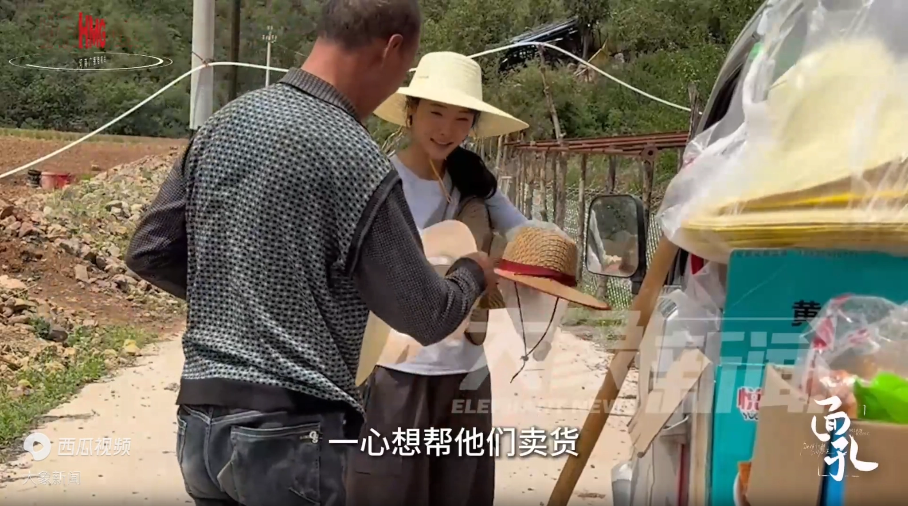
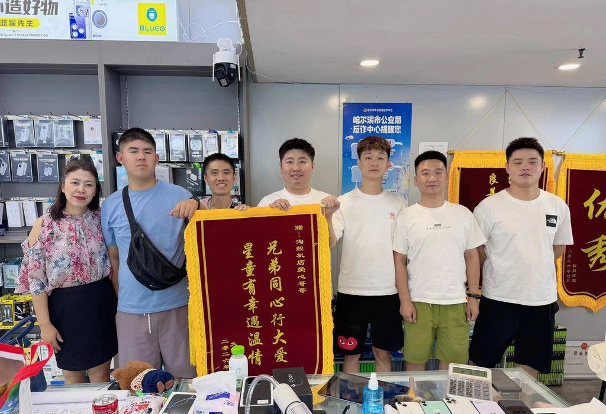

← 返回全部作品
《AIGC 编导脚本集》
Documentary Scripts
这些不是纯文学剧本，而是我在 AIGC 编导工作中使用的“分镜式纪实脚本”： 同时包含故事大纲、人物小传、场景动作、台词、字幕独白、镜头设计、剪辑节奏、BGM 参考与真实素材备注。 阅读时，每一场既在讲故事，也在设计镜头和剪辑。
脚本目录 INDEX / 04
SCR 01

人物纪实短片 / 乡村医生
《从未放下》——乡村医生王下放
他本可以离开大山，却在一通深夜求诊电话后下车，从此再没离开寨豁乡。
阅读脚本 →
SCR 02

人物纪实短片 / 女性成长 / 返乡助农
《福贵》——李福贵
她从被霸凌的厕所隔间里走出来，离婚后回到乡下卖货，最后成了村里老人共同的“孩子”。
阅读脚本 →
SCR 03

人物纪实短片 / 自闭症 / 社区温情
《大博》——自闭症青年与手机店主
一个不会付钱的年轻人拿走了饮料，店主却卸下了冰柜的锁。
阅读脚本 →
SCR 04

人物纪实 / 群像 / 医疗与温情
《抗癌厨房》——万佐成与熊庚香
儿子回家发现父母把日子过成了别人的厨房，直到他看见那些病人和家属，才明白父母在守护什么。
阅读脚本 →版本说明重复版本按最终版 / 数字最大的脚本整理：《从未放下》5（〈下放〉选题大纲为背景补充）· 《福贵》脚本（〈温柔乡〉大纲为背景补充）· 《大博脚本》（〈大博〉选题大纲为背景补充）· 《抗癌厨房脚本最终版》。